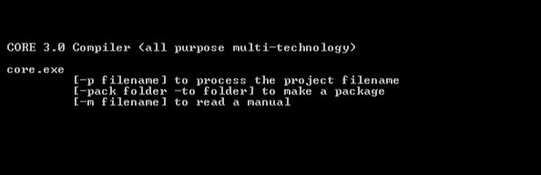
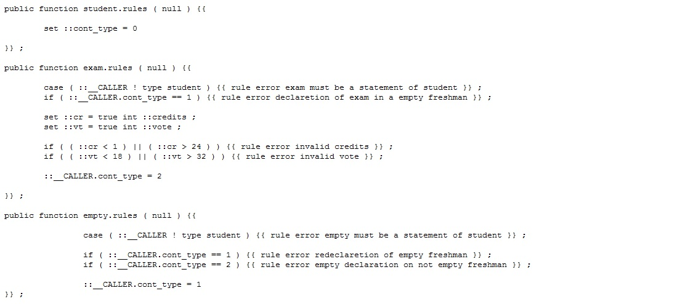
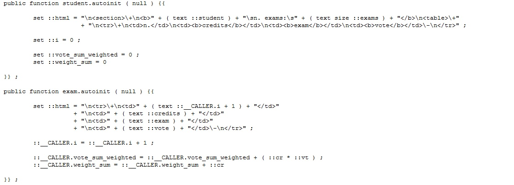
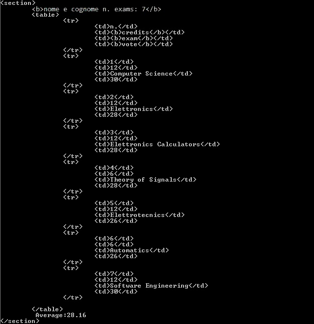
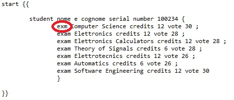
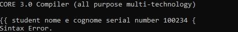

| core 3.0 compiler is a secure website, click to switch to https | Core 3.0 Overview | Frameworks | 4.0 Architecture | Consulting & Contacts |
| INTRODUCTION | Core 3.0 is a compiler open to the definition of new languages. It has three main characteristics. The first is to be a compiler or a computer program that translates a language (source code) into another language (object code). The second feature is that of being All-Purpose because it is possible to define new languages. The third is to be Multi-Technology because the object code can be of any (and more than one) language (technology) used today. The existence of this innovative technology cannot fail to have an effect in the possible change in the way of programming and change in the software analysis and development paradigms. Philosophically we can affirm that the current programming languages and their related libraries have the purpose of providing the widest programming possibility at the expense of the complexity and difficulty of programming. This is due to the fact that the language provider provides a product obviously not knowing the needs and development level solutions that the programmer intends to use. So any programmer can get what he wants but with difficulty due to the complexity that languages and their libraries have assumed. And when he finds himself having to re-implement his own solutions even tens of hundreds of times, perhaps having to do a little customization, he has to put his hand to long code, in terms of lines of code, and complex, as well as many technologies. With Core 3.0 we can work in terms of language engineering to provide developers with ad-hoc languages for their solutions that can clearly be customizable. The result is that of engineering simple languages, which in a few statements can be translated into complex implementation solutions. So that the problem or problems we discussed earlier can be said to be solved. It is clear that we who offer advice on the adoption of Core 3.0 must in a first phase of a few months collaborate with the company that wants to engineer a language. But once a framework for Core 3.0 has been created that realizes the language and translates it into solutions, the increase in developer productivity is exponential. On your part, there must therefore be the will to undertake a period of research and development with us. |
| OVERVIEW |
We can start introducing Core 3.0 with an overview, showing what it means to work (program) the compiler. And we will do it through a very simple example, so simple that it cannot be considered a case study, like the one presented in the frameworks page. At first we simply show what is displayed by launching the Core.exe file. The image shows the console, and three options, of which the first is the most important, that is the possibility of processing a project written in an ad-hoc engineered language for what we have to do. The creation of packages is equivalent to the encryption of files to make them unchangeable, in the case of collaboration with third-party companies, while the third allows you to always read the user manuals of the languages on the console. |
| PARSER |
The first step in programming a language is to set up the parser. That is, write what types of statements it must recognize, how and how these are structured. In this simple example we are dealing with a student booklet, so there are three, student, exams, and blank booklet. The parser has been configured very simply, and furthermore the example deals with a simple configuration of it. I think the code of all these examples is intuitive and does not require annotations. |
| SUORCE |
Now we can already syntactically express ourselves with the language we wanted. Here is what the drafting of a student booklet looks like: |
| RULES |
So let's start the programming work, in the Core 3.0 Compiler Language, starting to write the composition rules of the statements. That is how statements can be composed for the purpose of correct semantics. In this example, which I do not want to note, it is verified that the exams or the empty statement belong to a booklet, and that a booklet can also be declared empty at most once, and that if it is empty it cannot contain exams and vice versa. It is also verified that the credits and votes are whole numbers belonging to a certain interval. |
| TRANSLATION CODE |
Now we show the code needed to translate the booklet written by the new language into an html table. The weighted average of the votes rounded to the second decimal place is also calculated and written in the html file. A manual on programming using the Core 3.0 compiler language is not in the public domain, because this is our job. We engineer languages. Writing down the code would therefore be an end in itself. However, what you can guess from the example are the basic operating principles. |
| COMPILATION |
Here is the translation, the compilation as we call it, of the language in HTML code The page, or section, can now be viewed via the browser. |
| EXECUTION | |
| SINTAX ERRORS |
Interesting to you that you will be working with your language and knowing that syntactic and semantic errors are displayed for the purpose of a correction.  |
| DISCUSSION |
Those who have read and started to understand what has been said so far can widely imagine the great advantages that the adoption of this technology can bring in terms of simplicity in application development and increased developer productivity. Thanks to being able to translate a few lines of code into large amounts of code belonging to all the technologies necessary for a purpose. To those who had already felt the need for a tool like Core 3.0 being grappling with all the problems that software development puts on the shoulders of developers every day, I can only congratulate you because the solution that they intuitively asked for has been conceived and implemented. An effort by the latter would be enough to push their companies to adopt Core 3.0. For those who like to deal with the economic point of view I can say that the increase in productivity can be reflected in a lower cost of the software, in higher profits, and in less need for personnel. The adoption of the compiler is strongly recommended for companies that develop according to product lines. It is ideal, for example, for those who produce information systems, but not only. Anyone with a web-based or app-based product line or both can benefit from all the benefits of compiler adoption. On the other hand, it is not advisable to use the compiler for engineering companies which, having to cope with the most diverse customer requests, are forced from time to time to study to create the required solution. In this case, due to the lack of reusable code, it would be inconvenient to engineer a programming language that will be used only once and not repeated times. |